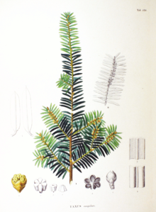

Project on the topic: Natural wonders of the Khabarovsk Territory.
The yew is pointed
Botanical Description

A dioecious, evergreen, wind-pollinated tree up to 20 m high.
The crown is usually irregular oval in shape with horizontal or drooping branches. The trunk is up to 1 m in diameter, with reddish-gray bark.
Distribution Area
The area of the pointed yew is very wide and covers Japan, Korea, Northeast China, the Far East of Russia - Primorye, Khabarovsk Krai, Sakhalin and the Kuril Islands.
At the same time, the species is relatively rare, as it grows singly or in small groups in coniferous-deciduous forests, most often in the contact zone of cedar forests with spruce forests. It rises in the mountains to a height of 800-900 m above sea level.
The presence of yew always indicates a sufficiently high and stable humidity during the growing season.
Ecology
Yew is one of the slowest growing tree species in the Far East, reaching 12 m in height by the age of 200. The age of the largest specimens cannot be accurately determined due to rot and hollowness; apparently, the yew tree lives up to 800-1000.
Проект выполнил: ученик 10А класса Шиповалов Данала.